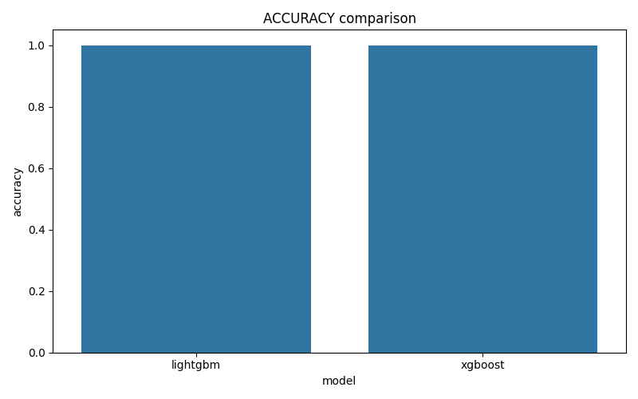
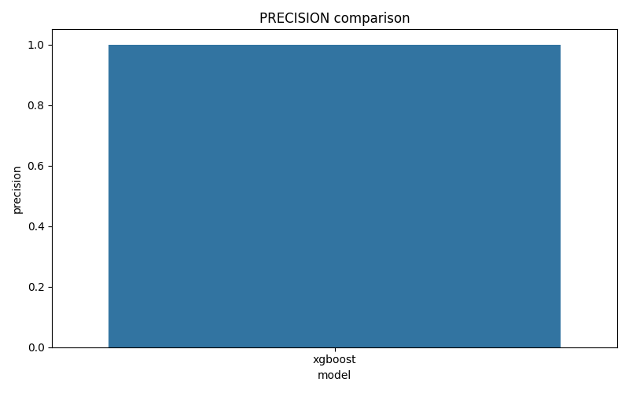
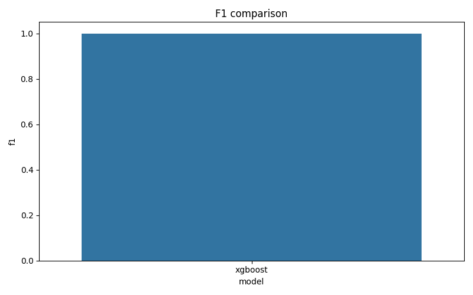
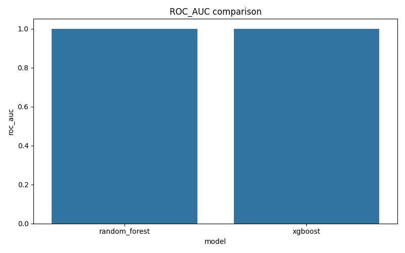
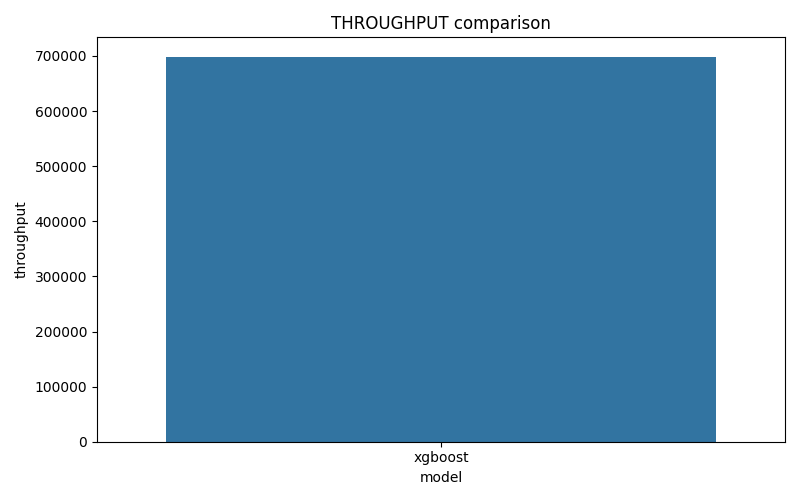
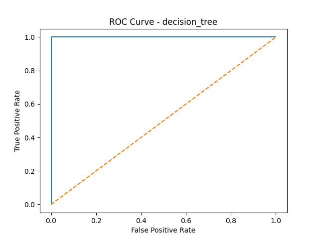
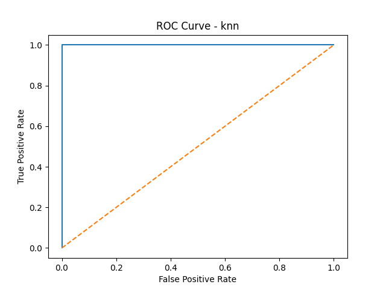
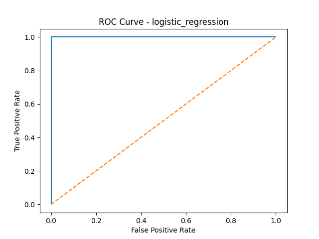
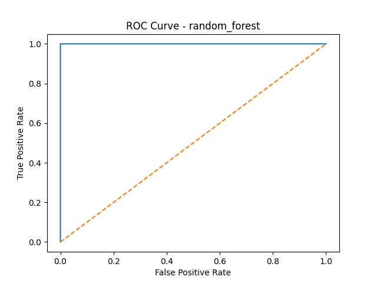
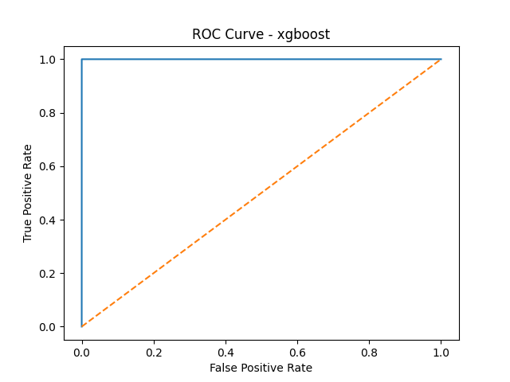

Dashboard automatique – Résultats des modèles
Comparaison ACCURACY

Comparaison PRECISION

Comparaison RECALL
Comparaison F1

Comparaison ROC_AUC

Comparaison THROUGHPUT

Heatmap des performances

Courbe ROC – adaboost_roc

Courbe ROC – catboost_roc

Courbe ROC – decision_tree_roc

Courbe ROC – gradient_boosting_roc
Courbe ROC – knn_roc

Courbe ROC – lightgbm_roc
Courbe ROC – logistic_regression_roc

Courbe ROC – naive_bayes_roc
Courbe ROC – random_forest_roc

Courbe ROC – svm_roc

Courbe ROC – xgboost_roc
